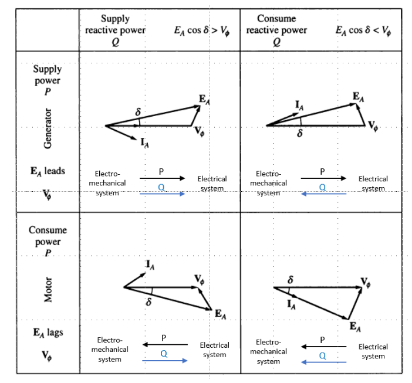
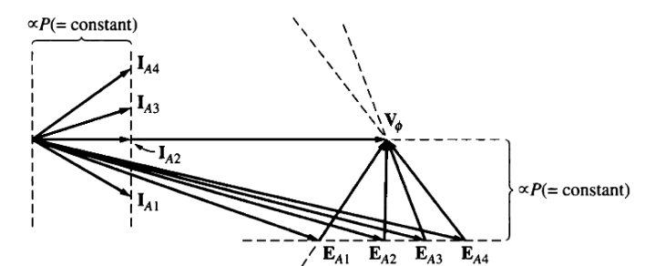
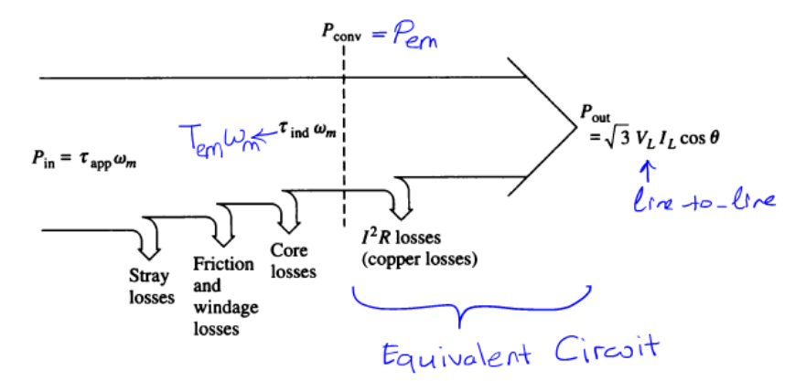

class: center, middle # EE-362 ELECTROMECHANICAL ENERGY CONVERSION-II # Real & Reactive Power, V-Curves of Synchronous Machines ## Ozan Keysan [keysan.me](http://keysan.me) Office: C-113 <span class="meta">•</span> Tel: 210 7586 --- # Synchronous Machines Power: ## \\(P = 3 V_t I_a cos (\theta)\\) Watts -- ### or ## \\(P = \dfrac{3 V\_t E\_f sin(\delta)}{X\_s}\\) ### when \\(R_a\\) is neglected --- ## What about Q (Reactive power)? -- ## \\(Q = 3 V_t I_a sin (\theta)\\) VAR -- ## \\(Q = \dfrac{3 V\_t (E\_f cos(\delta)-V\_t)}{X\_s} \\) --- ## What about Q (Reactive power)? ## Formal derivation --- # Direction of P, Q? ## Power (P) flows from leading side to lagging side -- ## Reactive Power (Q) flows from over-excited to under-excited side. -- ## Lagging pf generator supplies Q, lagging pf motor absorbs Q --- ## Power-Reactive Power Directions --- ## Power-Reactive Power Directions --- ### Direction of P, Q Summary  --- # Standalone Operation: ### Let's draw output voltage vs. load --- # Standalone Operation: ### \\(P\_{mech}\\) and \\(I\_f\\) must be controlled for constant \\(V_t\\) and f. ### Automatically done by the AVR (Automatic Voltage Regulator) --- ## Synchronous Generator Connected to Infinite Bus <img src="https://andymikeknight.github.io/machines/images/synch/inf_bus_vf.gif" alt="Drawing" style="width: 600px;"/> ## Constant terminal voltage and speed --- ## Synchronous Generator Connected to Infinite Bus # \\(\vec{E\_f} = \vec{V\_t} \pm (R\_a + j X\_s)\vec{I\_a}\\) ## \\(+\\): Generating ## \\(-\\): Motoring ## \\(V\_t\\): Constant (when connected to infinite bus) --- ## Synchronous Generator Connected to Infinite Bus ### There exists two main operating modes: - ## Constant Excitation, Variable Load (Circle Diagram) - ## Constant Power, Variable Excitation ## [Animation](https://andymikeknight.github.io/machines/synchronous/sg_p_infinite_bus.html) --- # Constant Power, Variable Excitation ## From geometry: \\(E\_f sin (\delta) = X\_s I\_a cos (\theta)\\) = Constant ## \\(E_f\\) moves on horizontal line --- ## For a generator connected to infinite bus: ### Draw \\(I\_f\\) vs \\(I\_a\\) if the power kept constant (= constant \\(E\_{f}sin(\delta)\\). -- <img src="./images/ee362/generator_v_curve.png" alt="Drawing" style="width: 600px;"/> --- # V-Curves: Generating Mode <img src="https://upload.wikimedia.org/wikipedia/commons/thumb/0/0a/V_curve_synchronous_motor.svg/1280px-V_curve_synchronous_motor.svg.png" alt="Drawing" style="width: 350px;"/> ### In generating mode, excess \\(I\_{field}\\) makes pf. lagging, and generator supplies reactive power to the grid. --- #V-Curves: Motoring Mode ## Phasor under constant power for the motoring mode  --- #V-Curves: Motoring Mode ### Different characteristics for motoring and generating modes <img src="http://electrical4u.com/electrical/wp-content/uploads/2013/05/V-curves-for-a-synchronous-motor-with-variable-excitation-20-02-15.gif" alt="Drawing" style="width: 450px;"/> ### In motoring mode, excess \\(I\_{field}\\) makes pf. leading. --- # Some Useful Animations ### [Infinite Bus Operation Animation](https://andymikeknight.github.io/machines/synchronous/sg_p_infinite_bus.html) ### [V-curves of a synchronous motor](http://www.ece.umn.edu/users/riaz/anim/synchronous_motor_Vcurves.html) ### [Synchronous generator capability curves](http://www.ece.umn.edu/users/riaz/anim/sm_V.html) ### [Video Animations for Rotating MMF](https://www.youtube.com/@bingsen/videos) ### [Other Animations](http://www.ece.umn.edu/users/riaz/animations/listanimations.html) --- # Synchronous Condenser -- ## A Synchronous motor operating at no-load <img src="http://electrical4u.com/electrical/wp-content/uploads/2013/05/V-curves-for-a-synchronous-motor-with-variable-excitation-20-02-15.gif" alt="Drawing" style="width: 300px;"/> ### Used to deliver or to absorb VAR by controlling \\(I_f\\) ### Can behave as a capacitor or an inductor! --- # Synchronous Condenser ## Any difference compared to a motor? <img src="https://teletype.in/files/0d/0dcf01b2-14e7-46d9-8be2-2d285e2e93ac.jpeg" alt="Drawing" style="width: 600px;"/> --- ## Largest Synchronous Condenser <img src="https://static.weg.net/news/notice-ZA-0057/WEG-Manufactures-Mega-Synchronous-Condensers_noticia_detalhe_w_0000.jpg" alt="Drawing" style="width: 350px;"/> ### 100 MVAr, 300 tons, built in 2014 by [WEG](http://www.weg.net/us/Media-Center/News/Products-Solutions/WEG-Manufactures-Mega-Synchronous-Condensers) for the Brasil Grid. [Manufacturing Video](https://www.youtube.com/watch?v=8g6CssH5iWo) #### For curious students: [Rise of renewables leads to synchronous condenser revival](https://new.abb.com/motors-generators/synchronous-condensers/rise-of-renewables-leads-to-synchronous-condenser-revival), [An old tool rediscovered to address new grid challenges](http://search.abb.com/library/Download.aspx?DocumentID=9AKK107258&LanguageCode=en&DocumentPartId=&Action=Launch) --- # Losses in Synchronous Machines  --- # Operating Limits of Synchronous Machines -- ## What are the factors that limit the power output from the synchronous generator? --- # Operating Limits of Synchronous Machines - ## Stator Heating: \\(\propto I_a^2\\) -- - ## Rotor Heating: Limited \\( I_f\\) = Limited \\( E_f\\) -- - ## Mechanical Power Input Limit -- - ## Stability Limit \\(\delta < 90 \\) ### Most cases it is much smaller for extra safety --- # Operating Limits of Synchronous Machines <img src="./images/synch_limits.png" alt="Drawing" style="width: 650px;"/> --- # Real Data <img src="./images/cummins_stability.png" alt="Drawing" style="width: 600px;"/> ### [Source:Cummins Generators](http://power.cummins.com/sites/default/files/literature/technicalpapers/PT-6001-ImpactofPowerFactorLoads-en.pdf) --- ## Example: -- ## 500 MVA, 3-phase, 4-pole, Y-connected synchronous generator connected to 22 kV infinite bus. -- ## Prime mover power (i.e. mechanical power) is set to 300 MW. -- ### a) Find E and load angle for a power factor of 0.8 lagging. -- ### b) Double check the load angle from the power expression. -- ### c) The field current is changed, and the power factor is adjusted to unity at 300 MW. Calculate the new load angle and the E. --- ## You can download this presentation from: [keysan.me/ee362](http://keysan.me/ee362) <!-- # Excluded Slides # Synchronous Machine Tests ## Open-Circuit Characteristics (OCC) <img src="http://people.ucalgary.ca/~aknigh/electrical_machines/synchronous/design/images/figs/oc_test.jpg" alt="Drawing" style="width: 300px;"/> ### At open-circuit friction and core losses can also be estimated. # Short-Circuit Characteristics (SCC) ## Armature windings short circuited, a small If is applied <img src="http://circuitglobe.com/wp-content/uploads/2016/01/Synchronous-Impedance-Methos-fig-5-compressor.jpg" alt="Drawing" style="width: 400px;"/> # OCC vs SCC <img src="http://electrical-riddles.com/upload/images/723392592_99.GIF" alt="Drawing" style="width: 616px;"/> # Determination of Xs ## If \\(R_a\\) is small: # \\(X\_s = \dfrac{V\_{(OC)}}{Ia\_{(SC)}}\\) ### For better approximation measure \\(R\_{a(dc)}\\) when the machine is stationary. # Determination of Xs ## \\(X\_s\\) can be calculated both for saturated and unsaturated regions <img src="http://people.ucalgary.ca/~aknigh/electrical_machines/synchronous/design/images/figs/xs_plot.jpg" alt="Drawing" style="width: 454px;"/> -->